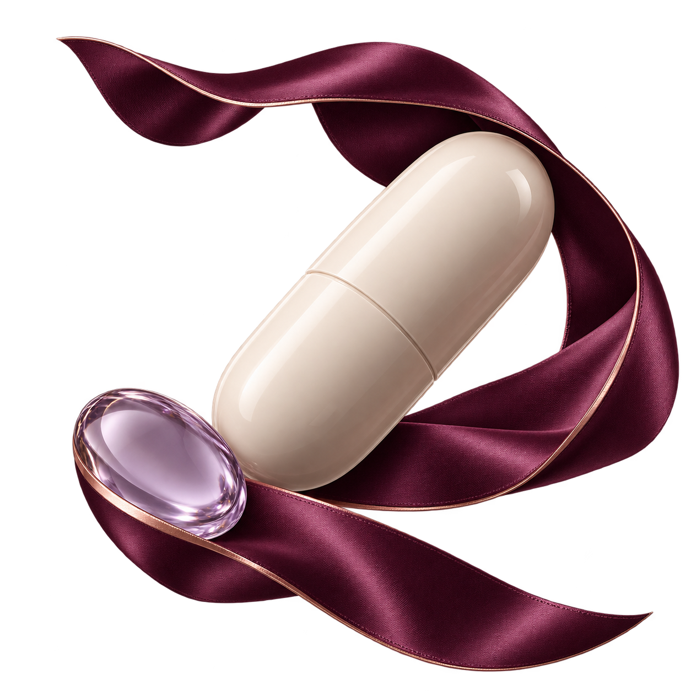

OBSERWOWANY LEK
Lek A
10 mgSamopoczucie przed rozpoczęciem zapisane
MAŁE OBSERWACJE. TWOJA HISTORIA.

OBSERWOWANY LEK
Samopoczucie przed rozpoczęciem zapisane
Zapisujemy kolejność zdarzeń. Pojawienie się objawu po rozpoczęciu leku nie oznacza, że lek go wywołał.
Twoje obserwacje, zapisane Twoimi słowami.
CYKL JAKO KONTEKST
Od zapisanego początku krwawienia. Dodaj sen, energię i samopoczucie.
Twoja historia obok informacji z oficjalnych źródeł. Z jasnymi ograniczeniami.
To osobista oś czasu, nie potwierdzenie przyczyny objawów.
TWOJE DOŚWIADCZENIE
Źródło: fikcyjny dziennik tej makiety
OFICJALNE INFORMACJE
Brak wyników dla przykładowego leku. W aplikacji pojawi się treść dopasowanej etykiety wraz z nazwą źródła i datą pobrania.
Docelowe źródło: FDA Drug Label przez openFDA
ZGŁOSZENIA Z PRAKTYKI
Brak danych dla przykładowego leku. Liczby zgłoszeń nie są ryzykiem, prawdopodobieństwem ani częstością występowania objawów.
Docelowe źródło: FDA FAERS przez openFDA
OGRANICZENIA
Spontaniczne zgłoszenia nie ustalają przyczynowości. Brak wyniku nie potwierdza bezpieczeństwa.
OD TWOJEGO ZAPISU
Początek krwawienia: 21 września.
Bez przewidywania faz hormonalnych.
LEK W TYM SAMYM DZIENNIKU
Daty i własne obserwacje w jednym miejscu. Cykl nie wyjaśnia automatycznie objawów.
Ostatni przykładowy check-in · 3 października
Nastrój
3 / 5Energia
2 / 5Sen
7 godzinNawodnienie
Własny zapisSkale opisują własną ocenę samopoczucia, nie wynik medyczny.
Dzień liczony od zapisanego początku krwawienia nie określa owulacji, płodności ani fazy hormonalnej.